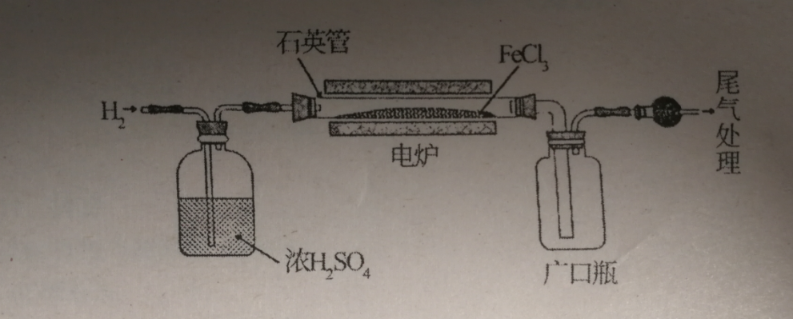
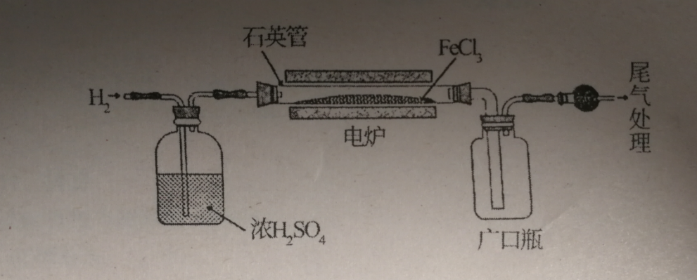

高级高三第一次月考
判断：硫酸铜溶液显酸性的原因： 错误，要可逆符号。
! !浓硫酸的作用除了除去水之外，还有什么？ 控制氢气流速。
苯的沸点大约是？ 80 摄氏度。
用苯在矿渣中提取硫，温度控制在 50~60 摄氏度，不宜过高，原因是？ 温度过高，苯容易挥发，加大损耗。
判断：硫酸铜溶液显酸性的原因： 错误，要可逆符号。
! !浓硫酸的作用除了除去水之外，还有什么？ 控制氢气流速。
苯的沸点大约是？ 80 摄氏度。
用苯在矿渣中提取硫，温度控制在 50~60 摄氏度，不宜过高，原因是？ 温度过高，苯容易挥发，加大损耗。